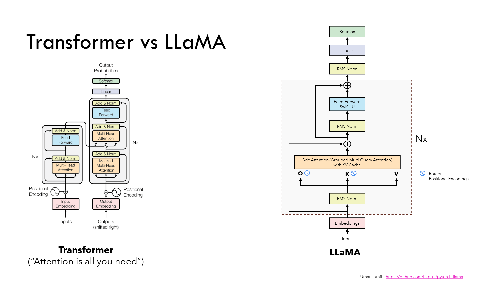

dataset.md
Dataset Preparation
- Why the Dataset Matters
The dataset is one of the most important factors in pretraining. But what exactly do we mean by “data” here?
In this context, it’s textual information gathered from the internet — things like blog posts, articles, books, and discussion sites (Reddit being one of the most popular). All of this text is combined into a huge “corpus,” which developers then clean and process.
It’s not just about having a massive amount of data. Quality matters more than quantity. There’s a saying: garbage in, garbage out. If a model is trained on tons of low-quality text (bad grammar, extreme biases, incoherent scraps from random social media posts), then the model will happily learn to imitate that bad text.
Of course, “high-quality text” doesn’t have a strict definition. But generally, removing bias-heavy content, incorrect information, and extreme or repetitive junk makes the dataset more useful for training.
- Sources of Data
There are a few well-known public datasets often used in LLM training:
CommonCrawl – A massive raw dump of the internet, updated monthly. Very messy and unprocessed.
C4 – Colossal Cleaned Common Crawl, a cleaned-up version of CommonCrawl curated by Google.
The Pile – Curated by EleutherAI, it’s a big mix of sources like arXiv, Wikipedia, GitHub, StackExchange, and more.
For this project, I’ll be using FineWeb, specifically the FineWebEdu subset.
- What is FineWeb?
FineWeb is a large-scale dataset derived from CommonCrawl, but extensively filtered. The result is a 15 trillion token corpus of much higher quality text.

As shown above, the FineWeb team applied several filters:
URL filtering – remove adult/unsafe sites.
Text extraction – clean raw HTML into usable text.
Language filtering – use a fastText classifier to keep only English text with score ≥ 0.65.
LM filtering – use a smaller language model to toss out very low-quality passages.
MinHash deduplication – remove near-duplicate documents.
C4 filters – apply the same cleaning rules used in Google’s C4 dataset.
Custom filters – e.g., require punctuation, remove pages with lots of tiny lines.
PII removal – scrub out personally identifiable information.
- FineWebEdu Subset
FineWebEdu goes even further. It selects content with an educational focus, resulting in two smaller but more useful subsets:
1.3 trillion tokens – very high educational quality.
5.4 trillion tokens – high educational quality.
How was this done? The FineWeb authors actually fine-tuned a LLaMA-3 70B model to act as a text quality rater. The model was trained to assign each passage a score from 0 to 5, where higher means more “educational.”
Threshold = 3 → keep only text scoring ≥ 3 → results in the 1.3T token dataset.
Threshold = 2 → keep only text scoring ≥ 2 → results in the 5.4T token dataset.
So instead of just cleaning mechanically, they used an LLM itself to filter text by “educational quality.”
There’s a great Hugging Face writeup if you want to dive deeper: FineWeb Blogpost
(Note: FineWeb token counts are reported using the GPT-2 tokenizer. More about tokens and tokenization in the next section.)
- This Project
For this project, I’ll be using FineWebEdu as the main pretraining dataset.
A general rule of thumb for dataset sizing: you want a parameter-to-token ratio of at least 1:20 (20 tokens for every model parameter). Once you get to very high ratios (like 1:100), you start seeing diminishing returns.
Additional Addons:!!!!!!!!!!!!!!!!!
Make sure to mention this is trained on ascii only!
Dataset Gathering & Sharding
The first step is to collect and prepare the dataset. Since this tokenizer will be used to tokenize the FineWebEdu dataset we gathered earlier, it would also be used to train the tokenizer (generally, it's better to train the tokenizer on the same distribution as the pretraining data for LLM).
But even then, the raw dataset is too large to work with as a single file, so we break it into smaller shards.
Why Sharding?
- Large text corpora can easily exceed hundreds of gigabytes.
- Training requires fast streaming of tokens — you don’t want to load the entire dataset into memory.
- By splitting into smaller shards (e.g., ~100MB each), we can load them efficiently and resume from checkpoints if needed.
Short / Medium / Long Buckets
The script doesn’t just shard randomly — it separates text into three “buckets” based on length:
- Short: under ~7,500 characters.
- Medium: 7,500–12,000 characters.
- Long: over 12,000 characters.
Why? Because training efficiency changes with sequence length. Training on shorter examples first lets the model pick up basic structure faster, while longer sequences come later when it has learned more.
Intentional “Leakage”
The script also allows some examples to “leak” into bigger buckets. For instance:
- ~15% of short samples are redirected into medium.
- ~10% of short samples are redirected into long.
This prevents the model from overfitting to only very long text near the end of training. In practice, real-world queries are often much shorter, so keeping a blend of lengths makes the model more robust.
Example Snippet (Simplified)
Here’s a stripped-down version of the gather script:
if ex["text"].isascii() and len(ex["text"]) <= max_length:
# pick bucket based on text length
if len(ex["text"]) <= 7500:
bucket = "short"
elif len(ex["text"]) <= 12000:
bucket = "medium"
else:
bucket = "long"
# allow some short → medium/long leakage
if bucket == "short" and random.random() < 0.25:
bucket = "medium" if random.random() < 0.6 else "long"
shard_text[bucket].append(f"<SOS>{ex['text']}<EOS>")
Notice a couple of important details:
- All text is wrapped with <SOS> (start of sequence) and <EOS> (end of sequence).
- This guarantees the tokenizer and model know exactly where an example begins and ends.
- Filtering to ASCII-only ensures consistency and avoids tricky edge cases with multilingual characters (important for compute-constrained projects).
By the end of this step, the dataset is organized into neatly sharded text files, ready to be fed into the tokenizer training process.
overview.md
Pretraining Overview
In this pretraining section, we’ll walk through the core parts: what pretraining is for, how the dataset is gathered, the model architecture, and the overall training process.
What is Pretraining?
Pretraining is the very first step in building a large language model (LLM). Like all deep neural networks, the model’s weights start out completely random (usually sampled from a normal distribution). At this stage, the model is basically useless — if you ask it to generate text, it’ll just spit out noise.
The goal of pretraining is to give the model a general sense of language. It gets exposed to a massive dataset of text and learns patterns like grammar, sentence structure, vocabulary, and even some factual knowledge just from raw co-occurrence. The training objective is next-token prediction — given some text, the model tries to predict the next word (or token).
After enough training, the model learns how to produce text that flows naturally. At this point, if you give it an input sequence, it’ll continue in the way that’s statistically most likely. It’s not yet an “assistant” that follows instructions — it’s more like a text autocomplete engine. That’s where later stages like SFT and RLHF come in.
Dataset
For this project, I’m using FineWebEdu from HuggingFace. It’s a large and diverse internet-based dataset that’s been heavily filtered. Filtering steps include things like deduplication, removing boilerplate (like HTML tags from scraped pages), and content filtering to keep it relatively clean. The idea is to make sure the model sees a broad variety of text without too much junk.
Model Architecture
The base model is a decoder-only transformer, similar to the LLaMA-2 design. It also supports an alternative attention mechanism called MLA (Multi-head Latent Attention), adapted from DeepSeek, though that’s optional in this pipeline.
Training Process
Training uses the standard cross-entropy loss with the AdamW optimizer. Since training is iterative, the model gradually improves through many passes of gradient descent — in this case, across tens of billions of tokens.
By the end of pretraining, the model develops a kind of “language sense.” It can generate coherent text, but it’s still very raw. It doesn’t know how to follow instructions or have a chat — those abilities come from the later stages: SFT (Supervised Fine-Tuning) and RLHF (Reinforcement Learning with Human Feedback).
Key Takeaway
Pretraining lays the foundation: it teaches the model how language works at a broad level, but not how to use it in a helpful way. Think of it as teaching a child to read and write before teaching them how to answer questions or follow directions.
training_advanced.md
training_beginner.md
1. Introduction: What Are We Doing?
Before we dive into training, let’s step back and ask: what exactly does it mean to “train a language model”?
At its core, the goal is very simple:
We want the model to learn how to predict the next token in a sequence of text.
The Idea in Plain English
Imagine you are reading a sentence:
"The cat sat on the ____"
Even without seeing the last word, your brain automatically guesses it might be “mat”, "couch", "floor" or any other plausible words. That’s because you’ve learned patterns of how words usually appear together.
A language model is doing the same thing, but instead of words, it deals with tokens (small units of text such as subwords, characters, or whole words depending on the tokenizer).
During training, the model sees billions of examples of token sequences and learns which token is most likely to come next. Over time, this builds up into a powerful statistical understanding of language.
From Text to Tokens
Computers can’t directly process raw text like "The cat sat on the mat". We first need to break it down into numerical form.
-
Raw Text:
"The cat sat on the mat" -
Tokenized Text (IDs):
[1202, 850, 149, 4211, 769, 1839]
(each number is a token ID from a vocabulary) -
Input Tensor (batch of sequences):
tensor([[1202, 850, 149, 4211, 769]])
The vocabulary maps every possible token (like “cat”, “sat”, “on”) to a unique integer. The model only sees these integers.
How the Model Thinks
Now, let’s show the high-level flow of how these tokens are processed:
flowchart LR
A[Raw Text] --> B[Tokenizer]
B --> C[Tokens: IDs]
C --> D[Transformer Model]
D --> E[Logits: raw scores]
E --> F[Softmax: probabilities]
F --> G[Loss Function]Let’s break down the important parts:
-
Logits: The model outputs a vector of raw scores for each possible token in the vocabulary. For example, if the vocab size is 50,000, the logits are a vector of 50,000 numbers. These are not yet probabilities.
-
Softmax: We apply the softmax function to logits, which turns them into probabilities (values between 0 and 1 that sum to 1). For example, the model might say:
- “mat”: 0.72
- “floor”: 0.12
- “couch”: 0.03
- … and so on for every other token.
-
Loss: The training process compares the predicted probability distribution to the correct answer (the actual next token). It calculates how far off the prediction was. This is the “loss.” The smaller the loss, the better the model is at predicting.
Why This Matters
This “predict the next token” setup is deceptively simple, but it’s powerful. By learning these probabilities across massive amounts of text, the model starts to capture grammar, facts, reasoning, and even world knowledge — all as a side effect of next-token prediction.
So when we say “train a transformer model,” what we really mean is:
- Give the model tons of sequences of tokens.
- Ask it to guess the next token.
- Measure how wrong it was.
- Adjust the model’s weights to improve its guesses.
- Repeat billions of times.
That’s the heart of language model training.
2. Model Configuration
Before we can train our transformer, we need to decide on all the hyperparameters and settings that control both the model and the training process. These settings are stored in a configuration object, which in our case is implemented using a Python dataclass called TrainingConfig.
The configuration file may look intimidating at first, since it lists dozens of parameters. But many of them are straightforward once you understand the categories they fall into. Let’s walk through the most important ones.
The first group of parameters defines where the data and outputs are stored. For example:
dataset_dirtells the program where to find the pre-tokenized dataset files.tokenizer_pathpoints to the JSON file that contains the trained tokenizer.ckpt_dirspecifies the folder where model checkpoints will be saved during training.log_fileis a simple text file where progress (like loss values) is recorded.
Together, these ensure the training script knows both where to read the data from and where to save its results.
Next, we have the batch and sequence length parameters, which directly control how much data the model processes at once.
batch_sizeis the number of sequences per batch. If you set this to 4, then each step processes 4 separate chunks of text in parallel.max_seq_lenis the maximum number of tokens per sequence. For example, ifmax_seq_len = 2048, then each input sequence is capped at 2048 tokens long. Longer documents must be split into smaller pieces.tokens_per_updatedefines how many tokens are processed before the optimizer takes a step. Since this touches upon gradient accumulation, which is outside the scope of this basic explanation, it will be covered in thetraining_advanced.mdfile.
These three parameters together determine how much work the model is doing in each training step and how much GPU memory it will consume.
Then comes the model architecture itself. These parameters define the shape and capacity of the transformer network:
n_embdis the embedding dimension, the size of the vector used to represent each token internally. Larger values allow the model to capture richer relationships, but also make it heavier to train.n_headssets how many attention heads are used per layer. Each head can focus on different relationships in the sequence, so more heads allow for more diverse patterns.n_layersis the number of stacked decoder layers. Each layer refines the token representations further, so deeper models are generally more powerful.multiple_ofcontrols the feedforward layer’s hidden dimension. Instead of choosing an arbitrary number, this ensures the size is a multiple of a fixed value (like 256), which helps optimize matrix multiplications on GPUs.epsis a tiny value added in normalization layers to avoid division by zero errors. It’s not something you usually tweak, but it is essential for numerical stability.thetasets the base frequency for Rotary Position Embeddings (RoPE), which are used to encode token positions into the model. Again, you typically leave this at its default.dropoutis a regularization mechanism where some connections are randomly “dropped” during training. For large pretraining, this is often set to0.0because the dataset itself provides enough variety, but in smaller-scale experiments you might increase it to avoid overfitting.
These architecture parameters are the “DNA” of the model. Changing them fundamentally alters the size and behavior of the transformer.
Another critical part of the config is the training schedule. Training a large language model is not just about choosing an optimizer and running it — we also need to carefully plan how the learning rate evolves over time.
warmup_iterationsspecifies how many steps are used to gradually increase the learning rate at the start of training. This prevents the model from diverging early on.max_lris the peak learning rate reached after warmup.min_lris the final learning rate at the end of training, typically reached through a cosine decay schedule.beta1andbeta2are parameters of the AdamW optimizer, which control how much past gradients influence the updates.weight_decayis a form of regularization that prevents weights from growing too large, helping the model generalize better.
Together, these define the “pace” at which the model learns.
Finally, we have the training tokens and evaluation settings.
training_tokensis the total number of tokens the model will see during training. For example,45e9means 45 billion tokens in total.eval_intervalcontrols how often the model’s progress is evaluated. For instance, every 32 steps the model might generate text and log its loss.model_gen_multiplieradjusts how frequently sample generations are produced during training.
The config also includes checkpointing settings such as token_ckpt (how often to save the model in terms of tokens processed) and load_ckpt (whether to resume from a previous run).
Even though this configuration object looks large, most of its parameters can be grouped into four intuitive categories: paths, batching, model architecture, and training schedule. For the beginner doc, you don’t need to memorize every single field — the important thing is to understand what each group does. The rest can be treated as implementation details that you return to once you start experimenting.
3. Dataset & Batching
In the introduction, we explained that the goal of training is for the model to learn how to predict the next token in a sequence. But how do we actually present this information to the model during training?
This is where the Dataset Loader comes in. Its job is to take the large tokenized dataset stored on disk and feed the model with manageable “mini-batches” of tokens at every training step. Without this loader, we would have no practical way to handle billions of tokens, because we cannot load everything into memory or train on an endless stream of raw text.
When training a language model, we usually start with a massive corpus of text — sometimes hundreds of gigabytes. This raw text has already been tokenized and stored in NumPy arrays for efficiency. These files are then fed into the Dataset Loader.
If you tried to feed the entire dataset into the model in one go, three things would immediately go wrong:
1. The model would run out of memory, because GPUs cannot hold billions of tokens at once.
2. Training would be extremely inefficient, since we want to update weights frequently rather than waiting for one giant pass.
3. We would lose the ability to shuffle, divide across GPUs, or checkpoint easily.
The Dataset Loader solves all of these problems by breaking the token stream into smaller, more manageable pieces. At each step, it delivers a batch of sequences — small slices of the dataset that the model can process in parallel.
The Structure of (x, y)
Each batch returned by the loader consists of two tensors:
x: The input sequences of tokens.y: The same sequences, shifted one position to the right.
This shifting mechanism is what allows the model to learn “next token prediction.”
Let’s walk through a concrete example. Suppose the dataset contains a chunk the following six tokens:
Tokens: [1202, 850, 149, 4211, 769, 1839]
If we set batch = 1 and seq_len = 5, then the loader will slice the data like this:
x = [[1202, 850, 149, 4211, 769]]
y = [[ 850, 149, 4211, 769, 1839]]
At first glance, this looks like we are simply training a bigram model — for every token in x, we just predict the token in the same position in y. But that’s not really what is happening inside the transformer. The important detail is that the model doesn’t just see the token at position t and try to guess token t+1. Instead, it sees the entire sequence up to position t, and from that context, it tries to guess the next token.
So in this case, the training targets look more like this:
- Given
[1202], predict850. - Given
[1202, 850], predict149. - Given
[1202, 850, 149], predict4211. - Given
[1202, 850, 149, 4211], predict769. - Given
[1202, 850, 149, 4211, 769], predict1839.
Notice the subtle difference. A bigram model would only look at one previous token at a time, while the transformer looks at the entire history of the sequence and uses self-attention to weigh the importance of different past tokens when predicting the next one. This is what allows it to capture long-range dependencies in language, like subject–verb agreement across many words.
Code Example with Toy Data
Here is a small code example using the DatasetLoader class:
from simple_llama.pretraining.dataset_loader import DatasetLoader
# Small example
loader = DatasetLoader(
batch=2, # Number of sequences in a batch
seq_len=4, # Number of tokens per sequence
process_rank=0, # Single-process case
num_processes=1,
dataset_dir="data",
device="cpu"
)
x, y = loader.get_batch()
print("x:", x)
print("y:", y)
Example output (toy data):
x: tensor([[1202, 850, 149, 4211],
[ 769, 1839, 3521, 4879]])
y: tensor([[ 850, 149, 4211, 769],
[1839, 3521, 4879, 2035]])
Now you can clearly see how the pairs line up. Each row of x is a sequence of tokens, and each row of y is that same sequence shifted by one token. The model is trained to predict all of those shifts in parallel.
Why Batching Matters
The idea of batching deserves special attention. If we only trained on one sequence at a time, the model would make progress, but it would be extremely slow and would not take advantage of GPU acceleration. By grouping multiple sequences together into a batch, we can exploit the GPU’s ability to perform large matrix multiplications efficiently.
Suppose we use:
- batch = 32
- seq_len = 2048
In that case, the model processes 65,536 tokens at every step. This is a massive increase in efficiency compared to processing a single sequence. This batching strategy is one of the main reasons why modern transformers can be trained at such large scales. It allows us to feed in huge amounts of data per optimization step, stabilize the gradients, and make much faster progress than would otherwise be possible.
The Dataset Loader is therefore the bridge between the massive dataset on disk and the mini-batches that the model actually learns from. It provides structure to the training process, ensuring that at every step, the model sees just enough data to make a meaningful update — and then moves on to the next batch.
Inside the Dataset Loader: How It Works
When you create a DatasetLoader, you pass in the batch size, sequence length, dataset directory, and a few distributed training arguments:
class DatasetLoader:
def __init__(self, batch: int, seq_len: int, process_rank: int, num_processes: int, dataset_dir: str, device: str):
"""
:param batch: Batch size
:param seq_len: Max seq len
:param process_rank: Rank of the process that initializes an instance of this class
:param num_processes: Total number of processes (World Size)
:param dataset_dir: Dataset directory
:param device: "cuda" or "cpu"
"""
self.batch = batch
self.seq_len = seq_len
self.process_rank = process_rank
self.num_processes = num_processes
self.device = device
# Holds all the filepaths
self.filepaths = sorted([os.path.join(dataset_dir, p) for p in os.listdir(dataset_dir)])
self.file_data = np.load(self.filepaths[0])
self.file_idx = 0 # Current file index
self.tok_idx = batch * seq_len * process_rank # Current token idx
Here’s what happens under the hood in __init__:
- Instance Attribute: It sets the instance attributes using the given arguments
- File discovery: It scans the dataset directory and gathers all
.npyfiles (each file stores a large array of token IDs). - Pointers/Tracker Initialization:
-file_data: At startup, the loader reads the first.npyfile in the dataset directory into memory. This array contains a long sequence of token IDs.
-file_idx: A counter that starts at0, meaning we are currently working with the first file in the dataset. As training progresses and one file is exhausted, this index is incremented to load the next file.
-tok_idx: A pointer into the current file that tells the loader where to start slicing tokens for the next batch. This is critical because each call toget_batch()must pick up right where the last one left off.
- Multi-GPU offset: If using multiple GPUs (distributed training), each process is assigned a different starting offset fortok_idx. This prevents all GPUs from training on the exact same data, ensuring better utilization of the dataset.
Together, these three trackers (file_data, file_idx, tok_idx) allow the loader to move seamlessly through massive token arrays spread across multiple files, while keeping every batch aligned and avoiding duplication across processes.
Getting a Batch
The heart of the class is get_batch(). This is the function called during training to get new (x, y) tensors.
-
Slice out a chunk of tokens:
batch = self.file_data[self.tok_idx : self.tok_idx + (self.batch * self.seq_len) + 1]Here we grab just enough tokens for a full batch (
batch * seq_len) plus one extra, sinceyis shifted. -
Reshape into 2D arrays:
x = batch[:-1].reshape(self.batch, self.seq_len) y = batch[1:].reshape(self.batch, self.seq_len)This step converts the flat token slice into two matrices:
-xfor the inputs,
-yfor the targets, shifted by one token. -
Advance the token index:
self.tok_idx += (self.batch * self.seq_len * self.num_processes) # Increment the index counter # If we reach the end of file, move on to the next one if self.tok_idx + (self.batch * self.seq_len * self.num_processes) + 1 >= len(self.file_data): self.file_idx += 1 if self.file_idx >= len(self.filepaths): self.file_idx = 0 self.file_data = np.load(self.filepaths[self.file_idx]) self.tok_idx = self.batch * self.seq_len * self.process_rankAfter returning a batch, the loader moves its pointer forward. If we reach the end of a file, it automatically loads the next one and update corresponding counters accordingly.
-
Convert to tensors:
return torch.from_numpy(x.astype(np.int32)).long().to(self.device), torch.from_numpy(y.astype(np.int32)).long().to(self.device)The NumPy arrays are cast to
torch.long(integer type needed for embeddings) and moved to the correct device (CPU or GPU).
Why This Design?
Overall, the Dataset Loader is designed for training efficiency:
- Streaming from disk: It only loads one dataset file at a time, so memory usage stays low.
- Batch alignment: It guarantees that
(x, y)line up perfectly for next-token prediction. - Distributed training friendly: The
process_rankandnum_processesarguments make sure multiple GPUs can work on different slices of the dataset without overlap. - Scalable: As long as your dataset is tokenized into
.npyfiles, this loader can handle billions of tokens just as easily as thousands.
One can think of it as a neat wrapper around:
- slicing arrays,
- reshaping them into (batch, seq_len) form,
- shifting by one token, and
- handing them to PyTorch.
This simplicity makes it both easy to understand and powerful enough for large-scale training.
4. Learning Rate Scheduler
The learning rate (LR) is one of the most important hyperparameters in training deep neural networks. Too high, and training diverges; too low, and learning stalls. A scheduler adjusts the learning rate dynamically during training, instead of keeping it fixed.
This project includes a custom Scheduler class that implements warmup and three different scheduling strategies: cosine decay, linear decay, and constant LR.
Why Use a Scheduler?
Schedulers help address two common issues in optimization:
- Exploding/vanishing gradients – keeping the LR too high/low throughout training often leads to instability or poor convergence.
- Training dynamics – a model often benefits from a short warmup phase (slowly ramping LR up), followed by a gradual decay to smaller values.
- Generalization – decaying the LR near the end of training often improves final accuracy/perplexity.
Instead of manually adjusting LR mid-training, a scheduler automates the process.
Scheduler Implementation
The Scheduler class wraps around a PyTorch optimizer. It is initialized with a few key parameters:
class Scheduler:
def __init__(self, torch_optimizer: Optimizer, schedule: str, training_steps: int,
warmup_steps: int, max_lr: float, min_lr: float):
# schedule ∈ ["cosine", "linear", "constant"]
# training_steps = total number of steps
# warmup_steps = steps spent ramping LR up
# max_lr = peak LR
# min_lr = final LR (ignored for "constant")
- schedule: strategy ("cosine", "linear", or "constant").
- training_steps: total steps in training run.
- warmup_steps: number of warmup steps (linear ramp up).
- max_lr: highest LR used during training.
- min_lr: final LR (for decay-based schedules).
Warmup
During warmup, LR increases linearly from near zero to max_lr:
def _update_warmup(self, current_step: int):
lr = (max(1, current_step) / self.warmup_steps) * self.max_lr
for param_group in self.optimizer.param_groups:
param_group['lr'] = lr
return lr
This prevents unstable updates at the beginning of training.
Cosine Decay
Cosine decay smoothly lowers the LR from max_lr to min_lr:
def _update_cosine(self, current_step: int):
current_step -= self.warmup_steps
scale = (current_step / self.decay_steps) * math.pi
lr = self.min_lr + 0.5 * (self.max_lr - self.min_lr) * (1 + math.cos(scale))
for param_group in self.optimizer.param_groups:
param_group['lr'] = lr
return lr
This schedule is popular in modern LLM training because it decays aggressively at first, then flattens out.
Linear Decay
Linear decay reduces LR steadily over time:
def _update_linear(self, current_step: int):
current_step -= self.warmup_steps
lr = self.max_lr - (current_step / self.decay_steps) * (self.max_lr - self.min_lr)
for param_group in self.optimizer.param_groups:
param_group['lr'] = lr
return lr
Simpler than cosine, but still effective.
Constant
Sometimes you may want to keep LR fixed at max_lr (e.g., for debugging).
if schedule == "constant":
for param_group in self.optimizer.param_groups:
param_group['lr'] = max_lr
Step Method
The central logic is in the step method, which updates LR depending on the phase of training:
def step(self, current_step: int):
if current_step < self.warmup_steps and self.schedule != "constant":
self.current_lr = self._update_warmup(current_step)
return
if self.schedule == "cosine":
self.current_lr = self._update_cosine(current_step)
elif self.schedule == "linear":
self.current_lr = self._update_linear(current_step)
elif self.schedule == "constant":
self.current_lr = self.max_lr
This ensures the correct schedule is applied at every step.
Visualizing the Schedules
To make things concrete, below are plots showing how the LR evolves across steps: (All are 100k total steps, 1k of which is warmup steps, max_lr set to 1e-3 and min_lr set to 1e-4)
Cosine with Warmup:

Linear with Warmup:

Constant LR:
You can generate these plots using the included test script in the class (__main__ block).
Summary
- Warmup prevents instability at the start of training.
- Cosine decay → smooth, effective, widely used in LLMs.
- Linear decay → simpler, still works well.
- Constant → mostly for experiments/debugging.
This custom scheduler is flexible, checkpointable, and provides good control for projects like this.
5. Training Loop
Training a large language model (LLM), even a small‑scale one like in this project, comes down to a repeated cycle: take a batch of data, run it through the model, calculate how wrong the predictions are, push the error backwards to update the weights, and repeat. This cycle is what we call the training loop. This section will walk in great detail through the core parts of the loop.
Instantiation
Before we can train the model, we need to set up all the core building blocks. Once everything is in place, the training loop itself becomes a straightforward repetition of forward pass, loss calculation, backward pass, and optimization.
1. Configuration Object
The first thing we need is a configuration object that stores all of our hyperparameters. Instead of scattering values like batch size, learning rate, and number of layers across different files, it’s cleaner to place them in a single object or namespace. This makes the code easier to manage, debug, and extend.
In this project, it will be the TrainingConfig class, located within the simple_llama/pretraining folder
@dataclass
class TrainingConfig:
# === Paths and Dataset ===
dataset_dir: str = root_path("simple_llama", "dataset", "short") # Path to tokenized training data
tokenizer_path: str = root_path("simple_llama", "dataset", "bpe_8k.json") # Path to tokenizer model
ckpt_dir: str = root_path("simple_llama", "pretraining", "checkpoints") # Directory to store checkpoints
log_file: str = root_path("simple_llama", "pretraining", "training_progress.txt") # File to log training progress
# === Batch & Sequence ===
batch_size: int = 4 # Minibatch size
max_seq_len: int = 2048 # Maximum sequence length per sample
tokens_per_update: int = 2**19 # ~512K tokens per optimizer update
# === Model Architecture ===
n_embd: int = 2048 # Embedding dimension
n_heads: int = 32 # Number of attention heads
n_layers: int = 24 # Number of transformer layers
multiple_of: int = 256 # Feedforward dim multiple for efficient matmul
eps: float = 1e-5 # Epsilon value to prevent div-by-zero in normalization layers
theta: int = 10_000 # Theta for RoPE rotation frequency
dropout: float = 0.0 # Dropout rate; typically 0.0 for pretraining
... # And many more
config = TrainingConfig()
This way, if we want to adjust n_heads or experiment with a different max_lr, it’s a single line change.
2. Dataset Loader
Next, instantiate a dataset loader object that is defined, passing in hyperparameters as needed, extracted from the configuration object:
from simple_llama.pretraining.dataset_loader import DatasetLoader
dataset_loader = DatasetLoader(batch=batch_size, seq_len=max_seq_len, process_rank=ddp_rank,
num_processes=ddp_world_size, dataset_dir=config.dataset_dir, device=device)
3. The Model
Now comes the centerpiece: the transformer model itself. In this project, we’ve implemented LLaMaTransformer, which includes embeddings, attention blocks, feedforward layers, normalization, and output projection.
model = LLaMaTransformer(config, tokenizer, device="cuda")
Here:
- config gives the model hyperparameters.
- tokenizer provides the vocabulary size.
- device="cuda" places the model on GPU.
Initially, the model’s parameters are random. Training gradually adjusts them so that token predictions become more accurate.
4. The Loss Function
Next, we define how the model will be judged. For language modeling, the go-to choice is cross-entropy loss:
criterion = torch.nn.CrossEntropyLoss()
Cross-entropy measures how “surprised” the model is by the correct next token.
- If the model assigns high probability → low loss.
- If it assigns low probability → high loss.
5. The Optimizer
Finally, we define the optimizer. We use AdamW, which is the de facto standard for transformers because it combines Adam’s adaptive gradient updates with weight decay for stability.
optimizer = torch.optim.AdamW(model.parameters(), lr=max_lr, betas=(beta1, beta2), weight_decay=weight_decay, **extra_args)
This way, every training step will use the optimizer to update the model parameters and the scheduler to adjust the learning rate.
6. Learning Rate Scheduler
Before we instantiate the optimizer, we actually define the learning rate scheduler. The scheduler controls how the learning rate evolves over time, which is critical for stable training.
We’re using the custom Scheduler class implemented earlier, which supports linear decay, cosine decay, or just a constant learning rate.
scheduler = Scheduler(torch_optimizer=optimizer,
schedule="cosine",
training_steps=optimization_steps,
warmup_steps=warmup_iterations,
max_lr=max_lr,
min_lr=min_lr)
At this stage, the torch_optimizer is left as None — we’ll link it once the optimizer is created. This flexibility makes it easy to checkpoint and resume training.
At this point, we’ve instantiated: - The configuration object - The dataset loader - The transformer model - The loss function - The optimizer - The learning rate scheduler
All the main components are ready. The next step is to actually run them inside the training loop.
The Model Forward Pass
We begin with a batch of input tokens, grabbed from the DatasetLoader object via the get_batch() method. Each integer corresponds to a token ID from our vocabulary.
Let’s say our batch size is B = 4, and the sequence length we train on is T = 16. A batch from the dataset loader might look like:
x.shape = (B, T) = (4, 16)
So x is a 2D tensor of integers. Each row is one training example (one text sequence), and each entry is a token ID.
When we feed this into the model:
logits = model(x)
the transformer runs all of its layers: embedding lookup, multiple decoder blocks, attention, feedforward layers, normalization, and finally a linear projection back to vocabulary size.
The key here is the shape change:
- Input:
(B, T)— integers. - Output:
(B, T, C)— floats, whereCis the vocabulary size.
Why (B, T, C)? Because for every position in every sequence, the model outputs a vector of size C, which are the raw unnormalized scores for each possible token in the vocabulary. These are called logits.
The Loss Function
Once we have logits, we want to measure how good the predictions are. That is the role of the loss function. For language modeling, the standard is cross entropy loss.
The goal is simple: the model is asked to predict the next token in the sequence. If the input sequence is [The, cat, sat, on, the], the correct output is [cat, sat, on, the, mat]. Each token should map to the next token.
Cross entropy measures how “surprised” the model is by the correct answer. If the model already places high probability on the true next token, the loss is small. If the model thought another token was much more likely, the loss is large.
In PyTorch, we use:
criterion = nn.CrossEntropyLoss()
However, CrossEntropyLoss expects inputs of shape (N, C) where N is the number of items and C is the number of classes, and targets of shape (N,).
Our logits are (B, T, C) and our targets are (B, T). So we flatten them:
loss = criterion(logits.view(-1, C), targets.view(-1))
This reshapes:
logits.view(-1, C)→(B*T, C)targets.view(-1)→(B*T,)
Effectively, we treat the whole batch as one big list of token predictions.
Mathematically, cross entropy loss is:
L = - (1/N) * Σ log(softmax(logits)[i, y_i])
where y_i is the true class (the correct next token).
More details will be covered in the Advanced Training page
The Backward Pass
Now comes the critical part: telling the model how wrong it was. This is done with:
loss.backward()
This triggers PyTorch’s autograd engine, which walks backwards through the computational graph.
Every tensor operation in PyTorch (matrix multiplies, nonlinearities, normalizations) records how it was computed. During .backward(), PyTorch applies the chain rule of calculus to compute gradients of the loss with respect to every parameter in the model.
So, if our model has parameters θ = {W1, W2, …}, then after loss.backward() we now have stored gradients ∂L/∂W for each parameter. These gradients are stored in each parameter tensor within the .grad attribute, which is a matrix of gradients the shape as the weight matrix.
These gradients tell us: “If you nudge this weight slightly, the loss would go up/down this much.” They are the signals that will guide weight updates.
The Optimizer Step
With gradients calculated, we actually update the weights. This is the job of the optimizer.
In this project, we use AdamW:
optimizer = torch.optim.AdamW(model.parameters(), lr=learning_rate)
AdamW is a variant of stochastic gradient descent that adapts learning rates per parameter and includes proper weight decay. It’s widely used in training transformers.
The update cycle is:
optimizer.zero_grad() # reset gradients to zero
# Between these two steps, perform forward pass, calculate loss, back propagation
optimizer.step() # update parameters using gradients
Why zero gradients? Because PyTorch accumulates gradients by default. If we didn’t zero them, gradients from multiple steps would pile up.
So the full cycle is:
- Zero gradients → prepare for next step.
- Forward pass → compute logits and loss.
- Loss calculation → use criterion to calculate loss.
- Backward pass → compute gradients.
- Optimizer step → update weights.
A Minimal Training Loop
Putting everything together:
for step in range(num_steps):
# Get a batch
x, y = dataset_loader.get_batch() # x: (B, T), y: (B, T)
# Forward pass
logits = model(x) # (B, T, C)
# Compute loss
loss = criterion(logits.view(-1, C), y.view(-1))
# Backward pass
optimizer.zero_grad()
loss.backward()
# Update
optimizer.step()
if step % 100 == 0:
print(f"Step {step}, Loss: {loss.item():.4f}")
Granted the actual implementation in simple_llama.pretraining.train file is much more complex, however this is the backbone of training. Every sophisticated training pipeline — from GPT to LLaMA — reduces to these few lines.
Evaluation and Monitoring
Training is only half the story. We need to know if the model is improving. The simplest way is to track the training loss. Over time, as the model sees more data, loss should decrease, which means the model is getting progressively better at predicting the next token, given an input sequence of tokens.
At the very beginning, before the model has learned anything meaningful, predictions are essentially random. In this case, the expected loss can be approximated by the natural logarithm of the vocabulary size, since each token is equally likely under a uniform distribution.
For our project, the vocabulary size is 8192. So if the predictions were truly uniform, the expected initial loss would be:
ln(8192) ≈ 9.01
However, in practice, most parameters in the model (such as linear layers) are initialized from Gaussian distributions using Kaiming or Xavier initialization. This breaks the perfect uniformity and introduces biases. As a result, the observed loss at the very start of training may be slightly higher than the theoretical value — for example, around 9.2 or 9.3 instead of exactly 9.01.
Why the log of vocab size? (Derivation)
Cross-Entropy Loss (CEL) is essentially a Negative Log Likelihood (NLL) loss. For a dataset of size N with true labels y_i and predicted probabilities p(y_i):
CEL = - (1/N) * Σ log(p(y_i))
For a single example where the true class is c:
CEL = - log(p(c))
If the model predicts uniformly over all V classes, then p(c) = 1/V. Plugging this in:
CEL = - log(1/V)
= log(V)
So under uniform predictions, the expected loss equals the log of vocabulary size.
Example:
- V = 8192
- CEL = log(8192)
- CEL ≈ 9.01
This is the theoretical baseline for random guessing. In practice, initialization bias may push it to ~9.3 at step 0.
Training Dynamics
As training continues, the loss should decrease steadily. For instance, a drop from ~9.3 to ~3 or ~2 means the model is learning meaningful statistical patterns in the data. Lower loss translates directly into the model being less “surprised” when predicting the next token.
Think of it this way:
- At loss ≈ 9, the model is basically clueless, assigning ~1/8192 probability to every token.
- At loss ≈ 3, the model assigns ~1/20 probability to the correct token on average.
- At loss ≈ 1, the model is strongly confident, giving ~1/3 probability to the correct token.
Even at a loss of around 3.0, the probabiliy assignment is at ~1/20. That may sound low if one interpret it as "The model only have a 5% chance of choosing the correct token, for a given sequence" However that is a bit misleading. In English (or just about all languages) there is natural entropy to it. Vast majority of the time, there are multiple valid answers to a given sequence.
Taking the previous example, we give the model: [The, cat, sat, on, the] and want it to predict the next token. Our true label should be the token corresponding to the word mat however, in general, there isn't just a single right-wrong answer.
Words like floor, ground, couch and such are also completely valid. Hence a probability of 1/20 chance choosing the 'correct' token isn't as bad a it may numerically seem to be.
Validation?
It’s also common to periodically evaluate on a held-out validation set. This prevents overfitting, since training loss always decreases but validation loss may rise if the model memorizes.
However, in this project, no validation set is used. Why? Because the dataset (50B tokens gathered from FineWebEdu) is completely unique. Training is done in a single epoch — the model will only see each token sequence once. Under this regime, overfitting is theoretically impossible.
In fact, if a model with ~1B parameters were able to fully overfit on 50B unique tokens, that would be remarkable — it would essentially mean the model is acting as a form of near-lossless compression of the dataset. From that perspective, it might even be considered desirable. But in practice, that's nearly impossible. Here we will only go through one pass using the 50B tokens, simply track training loss as the main signal of progress.
A Tiny Generation Example
Even early in training, it’s fun (and useful) to test the model by generating text.
We take a prompt, tokenize it, and call a generate function:
print(model.generate("Once upon a time", max_new_tokens=20))
At the start, the output will be nonsense — the model has learned almost nothing. But as loss decreases, generated samples gradually improve. They start forming grammatical sentences, then coherent paragraphs.
This qualitative check is as important as loss curves, because it directly shows what the model is learning.
Bringing It All Together
To summarize, each training step does:
- Take a batch
(B, T)of token IDs. - Run through model → get logits
(B, T, C). - Compute cross entropy loss with targets
(B, T). - Backpropagate loss → compute gradients.
- Optimizer updates weights.
- Zero gradients.
This loop runs millions of times. At small scale, it might be just tens of thousands of steps. At large scale (GPT‑3, LLaMA), training can take trillions of tokens.
But the essence is always the same. The beauty of the transformer is that all of this complexity — embeddings, attention, normalization, feedforward layers — reduces down to the training loop you’ve just seen.
model_architecture\attention.md
Attention
Attention is the heart of the transformer. It’s the mechanism that lets the model decide:
“Which other tokens in the sequence are relevant for predicting the next one?”
Vanilla Self-Attention
In the vanilla self-attention, we first start out with a given tensor, x, of shape (batch, seq_len, n_embd) as mentioned in the previous embeddings section.
Given that tensor, we compute three tensors, Each of them is a linear projection from the input tensor x
- Query (Q): what each token is looking for.
- Key (K): what each token offers.
- Value (V): the information carried by each token.
This is done by either creating 3 separate linear layers in the constructor for the self-attention class:
self.q_proj = nn.Linear(n_embd, n_embd)
self.k_proj = nn.Linear(n_embd, n_embd)
self.v_proj = nn.Linear(n_embd, n_embd)
self.o_proj = nn.Linear(n_embd, n_embd) # This will be used and touched upon later on
Where it can later be invoked to create the Q, K, and V tensors that will be used in attention computation:
# Takes an input tensor x of shape (batch, seq_len, n_embd) and linearly project it into another tensor, retaining the shape
q = self.q_proj(x)
k = self.k_proj(x)
v = self.v_proj(x)
However a more common method is the merge all of those linear layers into a single one, for more efficient computation:
self.qkv_proj = nn.Linear(n_embd, 3 * n_embd)
self.o_proj = nn.Linear(n_embd, n_embd)
Then later on, use that to get:
# Input shape: (batch, seq_len, n_embd), output shape: (batch, seq_len, 3 * n_embd)
qkv = self.qkv_proj(x)
# Split the tensor along the last dimension
q, k, v = qkv.chunk(3, dim=-1)
Both of those will produce the same result.
At this point, given an input tensor x, we now have 3 separate tensors q, k, and v, all of the shape (batch, seq_len, n_embd)
Next, we 'expand' the tensor from 3d to 4d, using the n_heads hyperparameter.
n_heads defines how many 'heads' we want in attention. Further explanation as to what it does will be given below.
We would use the last dimension, n_embd and divide that into (n_heads, head_dim), based on the formula head_dim = n_embd // n_heads
For example, given n_embd=1024, n_heads=16, then head_dim=1024//16=64, meaning we transform our 1024 embedding dimensions into 16 heads, each head have 64 dimension to work with.
It is crucial to add an assertion that n_embd % n_heads == 0 to make sure it evenly divides.
Given the hyperparameter n_heads, calculate head_dim, then view/reshape the tensor accordingly as follows:
# (batch, seq_len, n_embd) -> (batch, seq_len, n_heads, head_dim)
q = q.view(batch, seq_len, n_heads, head_dim)
k = k.view(batch, seq_len, n_heads, head_dim)
v = v.view(batch, seq_len, n_heads, head_dim)
Finally, we swap the dimension for seq_len and n_heads
# (batch, seq_len, n_heads, head_dim) -> (batch, n_heads, seq_len, head_dim)
q = q.permute(0, 2, 1, 3)
k = k.permute(0, 2, 1, 3)
v = v.permute(0, 2, 1, 3)
Now that our Q, K, V matrices are all of shape (batch, n_heads, seq_len, head_dim), we apply the self attention formula:
The first step is to compute \(\(QK^\top\)\)
Looking at the shape of the tensors, we will get an output:
(batch, n_heads, seq_len, head_dim) @ (batch, n_heads, head_dim, seq_len) = (batch, n_heads, seq_len, seq_len)
which we can denote as attn_scores = QK^T
Note the (seq_len, seq_len) ending dimensions. That's the reason why people say that attention computation scales quadratically w.r.t the seq_length of the model
Next, we apply element-wise division on the computed matrix, where the divisor is the sqrt of d_k, which from the paper refers to the dimensions of each head (head_dim)
attn_scores = attn_scores / math.sqrt(head_dim)
The attention scores is normalized by head-dim primarily because of the softmax operation that will immediately take place next.
In short, typically the Q, K, V matrices have unit gaussian distribution, when we apply matrix multiplication, the variance scales by head_dim
However with how softmax works, values that are more than, say, 3 units less than the maximum in the dimension of interest will be heavily squashed to approximately 0.
In our example scenario, if head_dim=64, that means the std increased from 1 to 8, which would compress the tensor into something similar to a one-hot vector.
Moving along, after we normalize the attention scores, which doesn't change the shape of the tensor, we would need to apply a triangular mask to attn_scores.
Typically, LLMs would add in these mask to prevent the model from 'cheating' by looking at future tokens.
Sort of like:
If someone gives you a sentence, 'I love my dog' and asks, 'What is the word after 'my'?'
It's trivial. The answer is 'dog'. However masking prevents that by, as the name suggests, masking out the next token.
In that same example, the other person would give 'I love my _' and then ask, 'What is the word after 'my'?'
Now in this example, let's use the sentence: "That is a blue dog" tokenized into [That, is, a, blue, dog] (Since there are only 5 tokens, that means seq_len=5 in this example)
After going through the embedding layer and above steps, we will reach a tensor of shape (batch, n_heads, 5, 5)
Grabbing one of the (5, 5) matrices arbitrarily might look something like:
"That" "is" "a" "blue" "dog"
----------------------------------------------
[ 1.93 1.49 0.90 -2.11 0.68 ] ← "That"
[-1.23 -0.04 -1.60 -0.75 -0.69 ] ← "is"
[-0.49 0.24 -1.11 0.09 -2.32 ] ← "a"
[-0.22 -1.38 -0.40 0.80 -0.62 ] ← "blue"
[-0.59 -0.06 -0.83 0.33 -1.56 ] ← "dog"
That tells us how much attention each token pays to each other. Now these are un-normalized values, so it would be hard to interpret, at least for now.
We then apply the triangular mask that prevents tokens to look ahead. It would be something like:
[ 0 -∞ -∞ -∞ -∞ ]
[ 0 0 -∞ -∞ -∞ ]
[ 0 0 0 -∞ -∞ ]
[ 0 0 0 0 -∞ ]
[ 0 0 0 0 0 ]
Applying via element-wise addition:
attn_scores = attn_scores + mask
The result would now look like:
"That" "is" "a" "blue" "dog"
----------------------------------------------
[ 1.93 -∞ -∞ -∞ -∞ ] ← "That"
[-1.23 -0.04 -∞ -∞ -∞ ] ← "is"
[-0.49 0.24 -1.11 -∞ -∞ ] ← "a"
[-0.22 -1.38 -0.40 0.80 -∞ ] ← "blue"
[-0.59 -0.06 -0.83 0.33 -1.56 ] ← "dog"
we pass it through the softmax function to transform it into something like a probability distribution.
attn_weights = torch.nn.functional.softmax(attn_scores, dim=-1)
"That" "is" "a" "blue" "dog"
----------------------------------------------
[1.0000 0.0000 0.0000 0.0000 0.0000 ] ← "That"
[0.2330 0.7670 0.0000 0.0000 0.0000 ] ← "is"
[0.2759 0.5753 0.1488 0.0000 0.0000 ] ← "a"
[0.2032 0.0632 0.1699 0.5637 0.0000 ] ← "blue"
[0.1566 0.2658 0.1236 0.3942 0.0596 ] ← "dog"
As you can see, starting out with the token corresponding to 'That', it can only pay attention to itself, since it's the first token in the sequence Next is the word 'is', which splits the attention between 'That' and itself So on and so forth. This tells the model how much each token attends to each other.
At this point, the attn_weights tensor is still of shape (batch, n_heads, seq_len, seq_len) since both normalization and softmax doesn't change the tensor shape
Now we process the final steps:
# (batch, n_heads, seq_len, seq_len) @ (batch, n_heads, seq_len, head_dim) = (batch, n_heads, seq_len, head_dim)
attn_output = attn_weights @ v
# (batch, n_heads, seq_len, head_dim) -> (batch, seq_len, n_heads, head_dim) -> (batch, seq_len, n_embd)
attn_output = attn_output.permute(0, 2, 1, 3).view(batch, seq_len, n_embd)
return self.o_proj(attn_output)
The final step here is to first matrix multiply with the v tensor to get the tensor of shape (batch, n_heads, seq_len, head_dim)
We revert the permutation and viewing to get back the original input shape (batch, seq_len, n_embd)
Finally, apply the output projection matrix to attn_output before returning.
So what's the purpose of output matrix?
One can think of it as a way to combine the information that each head learned. Recall that when we apply attention, we use multiple heads. Each head process their own 'chunk' of embedding dimensions compeltely separately from each other. It's beneficial to allow them to learn their own information, however at the end, we merely concatenate them together.
The final output projection matrix allows the information to get 'aggregated' and combined.
In This Project: Implementation
In MHSelfAttention, queries, keys, and values are created together, where it's first viewed then chunked along the last dimension:
qkv = self.qkv_linear(x)
q, k, v = qkv.view(batch, seq_len, n_heads, 3 * h_dim).chunk(3, dim=-1)
- Each input token embedding is linearly projected into Q, K, V vectors.
- Shape after splitting:
(batch, seq_len, n_heads, h_dim).
Then, before computing attention, Rotary Position Embeddings (RoPE) are applied to Q and K:
q = apply_rotary_embeddings(q, freqs_complex)
k = apply_rotary_embeddings(k, freqs_complex)
Why? Token embeddings alone tell the model what a word is, but not where it appears. Without positional info,
- “The cat sat on the mat.”
- “The mat sat on the cat.”
would look identical.
Instead of adding positional vectors (like the original Transformer’s sinusoidal method), RoPE rotates Q and K in the complex plane by an amount proportional to their position. This makes attention directly sensitive to relative distances between tokens.
For our purposes, you can think of RoPE as: “a lightweight operation on Q and K that encodes order, without changing tensor shapes.”
(If you want to dive deeper, check the RoPE paper on arxiv.)
Next, permute the tensors then apply scaled dot-product attention:
q = q.permute(0, 2, 1, 3)
k = k.permute(0, 2, 1, 3)
v = v.permute(0, 2, 1, 3)
scores = q @ k.transpose(-2, -1) / sqrt(h_dim)
mask = torch.tril(torch.ones((seq_len, seq_len), device=self.device))
scores = scores.masked_fill(~mask, float('-inf'))
weights = F.softmax(scores, dim=-1)
out = weights @ v
- The causal mask ensures each token can only attend to past tokens (left-to-right).
- Softmax converts similarity scores into weights.
- Weighted sum with V produces the final attended representation.
Finally, results from all heads are concatenated and passed through a linear projection to mix information.
Notes
-
Why not Multi-Query Attention?
The original LLaMA-2 paper uses multi-query attention (MQA), where all heads share the same K and V but have separate Q.
This greatly reduces KV-cache memory usage, which is important for scaling to very large models and efficient inference.
For this project, memory pressure from KV-cache isn’t a bottleneck, so standard multi-head attention is simpler and sufficient. -
What about DeepSeek’s MLA?
This project includes an optional implementation of Multi-Head Latent Attention (MLA), which is a refinement that reduces KV-cache memory even further while keeping multiple latent spaces.
It’s more efficient than MQA, but again — KV-cache isn’t the limiting factor here.
Since the focus is educational clarity, SimpleLLaMA sticks with classic multi-head attention.
model_architecture\decoder_block.md
Transformer Decoder Block
The decoder block is the fundamental building unit of the transformer.
Each block combines attention, feedforward networks, normalization, and residual connections into a repeatable structure.
Structure of a Decoder Block
A decoder block has two main parts:
- Multi-Head Self-Attention (MHA) → lets tokens exchange information.
- Feedforward Network (FFN) → transforms the attended features into richer representations.
Surrounding these are:
- RMSNorm → stabilizes training by normalizing activations.
- Residual Connections → ensure information from earlier layers isn’t lost.
The primary block flow is:
Input → Norm → Attention → Residual → Norm → Feedforward → Residual → Output
This “pre-norm” setup (normalize before each sub-layer) is known to improve stability in deep transformers.
Example Walkthrough
Let’s step through what happens inside one decoder block.
Suppose we have an input tensor x of shape (batch, seq_len, n_embd).
1. First Normalization
h = self.norm1(x)
x.- This ensures the activations are scaled to a stable range before entering attention.
- Unlike LayerNorm, RMSNorm does not recenter the mean — it only rescales variance.
2. Multi-Head Self-Attention
attn_out = self.attention(h, freqs_complex)
- Rotary Position Embeddings (RoPE) are applied to Q and K to inject positional info.
- Attention computes how strongly each token attends to others in the sequence.
- The output has the same shape as the input:
(batch, seq_len, n_embd).
3. First Residual Connection
h = x + attn_out
x back to the attention output.- This is called a residual connection (or skip connection).
Why is this important?
- Imagine stacking dozens of layers. Without skip connections, the network could "forget" the original signal after being transformed multiple times.
- By adding x back, we preserve the original information while also giving the model access to the new transformed features from attention.
- During backpropagation, residuals also help gradients flow more smoothly, preventing vanishing or exploding gradients.
- In practice, you can think of it as: the model learns adjustments (deltas) on top of the original input, instead of rewriting it from scratch every time.
4. Second Normalization
h_norm = self.norm2(h)
- This keeps the values stable before passing into the FFN.
5. Feedforward Network
ffn_out = self.ffwd(h_norm)
- Adds nonlinearity and transformation capacity.
- Output shape:
(batch, seq_len, n_embd).
6. Second Residual Connection
out = h + ffn_out
- Instead, it layers on additional transformations from the FFN.
- By the time you stack many decoder blocks, each one is contributing refinements while keeping the original context intact.
- This makes the network much more robust and trainable.
Final output shape: (batch, seq_len, n_embd).
In This Project
- Attention type: defaults to standard multi-head self-attention, with optional MLA for efficiency.
- Normalization: RMSNorm used everywhere (simpler than LayerNorm, but empirically stable).
- Activation: SiLU-based feedforward (SwiGLU).
- Dropout: applied after projections, mainly used during fine-tuning (SFT/RLHF).
- Residuals: used after both the attention and FFN sublayers.
Together, these form the repeating backbone of the SimpleLLaMA model.
By stacking many of these blocks, the network can build increasingly complex representations of text sequences.
model_architecture\embeddings.md
Embeddings
Embeddings are the first step in turning discrete tokens (integers from tokenization) into continuous vectors for a neural network to process.
Token Embeddings
After tokenization, each word or subword is represented by an integer ID. But LLMs don’t work directly with these integers. Instead, we map each token ID into a dense vector of fixed size (the embedding dimension).
In PyTorch, this is done with an nn.Embedding layer. In the LLaMaTransformer class from this project, you’ll see:
self.embeddings = nn.Embedding(tokenizer.get_vocab_size(), n_embd)
(Often times the embedding dimensionality of the model, n_embd in this case, is referred to under different names. Common ones include embedding_dim, d_model, and hidden_size)
Here, an embedding layer is created, which serves as a lookup table for the model.
It takes in two primary values, vocab_size and n_embd and create a matrix of shape (vocab_size, n_embd)
Each row corresponds to a token ID and is a trainable vector. For example:
- Token "I" → 73 → [0.12, -0.44, 1.05, ...]
- Token "an" → 256 → [1.33, 0.05, -0.72, ...]
Both will be map to unique vectors, all of which will be of length n_embd
At initialization, these vectors are random. During training, the model adjusts them so that it learns semantic relationship between tokens.
n_embd is a crucial hyperparameter when creating a LLM. It essentially gives the model the flexibility of how much 'semantics' each token can hold.
For example, say the word man and woman can be represented by a single token, 1098 and 1290 respectively.
Passing those through the embedding layer, the model will grab the vector at row index of 1098 to represent that as man, and row index 1290 for woman
Their vectors will differ, but both have shape (n_embd,).
You can think of each dimension in this vector space as encoding some abstract feature the model has learned. For example, one combination of dimensions might capture gender-like differences (man vs. woman), while another might capture whether something is an animate being or an object.
However this is just a simplified way of explanation. In reality, these dimension are polysemantic and is much more complex.
(Should include explanation that each value is a dimension as well?)
Once we convert our list of tokens into a list of vectors, we can proceed with passing that to the Decoder Block.
Embeddings in This Project
- Embedding dimension (
n_embd) is configurable (e.g., 768, 1024, or higher). - RoPE is used for positional encoding by default, following LLaMA.
- Initialization: embeddings start random and are updated through backpropagation.
- Tied weights: this project experimented with tying embeddings to the final output projection layer (a trick used in some models). But in practice, training became unstable, so it was disabled.
Walkthrough Example
Let’s walk through a toy example with the sentence:
“I love dogs”
Step 1. Tokenization
Using an arbitrary word-level tokenizer, each word is mapped to an integer ID:
"I"→ 73"love"→ 786"dogs"→ 2934
So the input sequence is:
[73, 786, 2934]
Step 2. Embedding Matrix
When we create an nn.Embedding(vocab_size, embedding_dim) layer, it internally builds a big lookup table (a matrix).
- Shape =
(vocab_size, embedding_dim) - Each row index corresponds to a token ID.
- Each row contains a vector of length
embedding_dim.
For this example, let’s set embedding_dim = 8. That means every token ID will be mapped to an 8-dimensional vector.
A (very small) portion of the embedding matrix might look like this at initialization (values are random floats):
0: [ 0.11, -0.07, 0.45, 0.02, -0.33, 0.19, -0.48, 0.05]
1: [-0.21, 0.34, -0.11, -0.08, 0.27, -0.39, 0.17, -0.43]
2: [ 0.09, 0.13, 0.28, -0.47, -0.36, 0.22, 0.41, -0.18]
3: [-0.15, 0.54, 0.28, 0.12, -0.41, -0.41, -0.53, 0.44]
4: [ 0.12, 0.25, -0.58, 0.56, 0.4, -0.35, -0.38, -0.38]
5: [-0.23, 0.03, -0.08, -0.25, 0.13, -0.43, -0.25, -0.16]
...
73: [ 0.22, -0.51, 0.36, 0.08, -0.44, 0.19, -0.09, 0.27]
...
786: [-0.13, 0.42, 0.07, -0.36, 0.55, -0.22, 0.18, 0.04]
...
2934: [ 0.31, -0.14, -0.25, 0.49, -0.07, 0.61, -0.12, -0.33]
...
Step 3. Lookup
Now, to embed our sentence [73, 786, 2934], the embedding layer simply selects the rows at those indices:
- Token ID 73 (“I”) →
[ 0.22, -0.51, 0.36, 0.08, -0.44, 0.19, -0.09, 0.27 ] - Token ID 786 (“love”) →
[ -0.13, 0.42, 0.07, -0.36, 0.55, -0.22, 0.18, 0.04 ] - Token ID 2934 (“dogs”) →
[ 0.31, -0.14, -0.25, 0.49, -0.07, 0.61, -0.12, -0.33 ]
Step 4. Output Tensor
Stacking them together, the embedding layer outputs a tensor:
[
[ 0.22, -0.51, 0.36, 0.08, -0.44, 0.19, -0.09, 0.27 ], # "I"
[ -0.13, 0.42, 0.07, -0.36, 0.55, -0.22, 0.18, 0.04 ], # "love"
[ 0.31, -0.14, -0.25, 0.49, -0.07, 0.61, -0.12, -0.33 ] # "dogs"
]
Shape = (3, 8) → 3 tokens, each represented by an 8-dimensional vector.
Essentially, given an input 1d tensor of tokens, which the number of tokens is often referred to as (seq_len,),
we transform it into a tensor of shape (seq_len, n_embd)
In this example, it is (3, 8)
This is the format that gets passed on to the Decoder Block.
A very important note is that there's almost always a third dimension, called a Batch dimension.
This allows parallel processing, which makes training much faster.
Batch dimension is always the very first dimension, so the shape of output tensor is (batch, seq_len, n_embd)
In this case, since we only have a single example sentence, batch dimension value would be 1, which is
(1, 3, 8)
model_architecture\end_to_end.md
End-to-End Walkthrough
Now at this point, most of the aspects of the architecture and pipeline have been covered in detail.
This final page will be used to tie everything together and give a more thorough, step-by-step overview of how all the parts interact to form a working large language model.
1. From Raw Text to Tokens
We first start out with a massive corpus of text — think in the scale of hundreds of gigabytes upwards, containing billions or even trillions of tokens.
This corpus is gathered from sources like books, Wikipedia, academic papers, code repositories, and curated parts of the internet.
But raw text isn’t useful to the model. The model only works with numbers, so the very first step is to tokenize this text using a pretrained tokenizer.
For example, suppose we have the sentence:
"The quick brown fox jumps over the lazy dog."
The tokenizer will break this into smaller units (subwords or characters depending on the algorithm) and then convert each into an integer ID.
That means something like:
["The", " quick", " brown", " fox", " jumps", " over", " the", " lazy", " dog", "."]
→ [1202, 850, 149, 4211, 769, 1839, 3521, 4879, 2035, 1209]
Now the sentence is represented as a sequence of integers.
This is the form that the neural network can actually process.
2. Batching and Shaping the Data
Instead of feeding one sentence at a time, training uses mini-batches to process many sequences in parallel.
This is crucial for efficiency on GPUs/TPUs.
Suppose we have a long stream of tokens like:
[1202, 850, 149, 4211, 769, 1839, 3521, 4879, 2035, 1209, 954, 4461, 3546, 206, 4401, ...]
If we set:
batch_size = 2seq_len = 6
We would take the first batch_size * seq_len = 12 tokens and reshape them into a (batch, seq_len) tensor:
batch_size = 2
seq_len = 6
tokens = [1202, 850, 149, 4211, 769, 1839, 3521, 4879, 2035, 1209, 954, 4461, 3546, 206, 4401, ...]
input_tokens = torch.tensor(tokens[:batch_size * seq_len]).reshape(batch_size, seq_len)
# When printed, input_tokens would look like:
# tensor([[1202, 850, 149, 4211, 769, 1839],
# [3521, 4879, 2035, 1209, 954, 4461]])
This reshaped tensor is now ready for the model.
In realistic training runs, values are much larger, e.g.:
- batch_size = 32 (process 32 sequences in parallel)
- seq_len = 2048 (each sequence is 2048 tokens long)
So the model processes a tensor of shape (32, 2048) in one forward pass.
3. Passing Through the Transformer Model
Next, this tensor of token IDs is passed into the transformer model.
The model is composed of the architecture we previously touched upon in detail: embeddings, attention, feedforward networks, normalization, and residual connections, all stacked together into many decoder blocks.
Here is the structure of the LLaMaTransformer class that uses all the previous building blocks:
class LLaMaTransformer(nn.Module):
def __init__(self,
config: any,
tokenizer: tokenizers.Tokenizer,
device: str):
super().__init__()
# === Unpack config ===
max_seq_len = config.max_seq_len
n_embd = config.n_embd
n_heads = config.n_heads
n_layers = config.n_layers
multiple_of = config.multiple_of
# And many more, will omit for documentation
assert n_embd % n_heads == 0, f"n_embd ({n_embd}) % n_heads ({n_heads}) must equal 0!"
assert (n_embd // n_heads) % 2 == 0 and qk_rope_head_dim % 2 == 0, "head_dim must be even for RoPE!"
self.tokenizer = tokenizer
self.max_seq_len = max_seq_len
self.device = device
self.embeddings = nn.Embedding(tokenizer.get_vocab_size(), n_embd)
self.decoder_blocks = nn.ModuleList(
[DecoderBlock(n_embd=n_embd, n_heads=n_heads, multiple_of=multiple_of, use_mla=use_mla, ...)
for _ in range(n_layers)])
self.norm = RMSNorm(n_embd, eps)
self.final_linear = nn.Linear(n_embd, tokenizer.get_vocab_size(), bias=False)
h_dim = qk_rope_head_dim if use_mla else n_embd // n_heads
self.freq_complex = precompute_theta_pos_frequencies(max_seq_len, h_dim, theta, device)
def forward(self, x):
batch, seq_len = x.shape
# (batch, seq_len) -> (batch, seq_len, n_embd)
h = self.embeddings(x) # Each token ID mapped to vector
freqs_complex = self.freq_complex[:seq_len]
# Pass through all Decoder Blocks
for dec_block in self.decoder_blocks:
h = dec_block(h, freqs_complex)
h = self.norm(h)
return self.final_linear(h) # (batch, seq_len, n_embd) -> (batch, seq_len, vocab_size)
4. Step-by-Step Inside the Model
4.1 Embedding Layer
- Input:
(batch, seq_len)of integers. - Each integer token is mapped into a dense vector of length
n_embd. - Output:
(batch, seq_len, n_embd)
This is the semantic representation of tokens: instead of just IDs, we now have vectors that carry meaning and relationships.
4.2 Positional Information
We then fetch freqs_complex, which stores precomputed values for Rotary Position Embeddings (RoPE).
RoPE encodes the positions of tokens into the attention mechanism, so the model knows order (e.g., difference between “dog bites man” and “man bites dog”).
4.3 Decoder Blocks
The embedded tensor is then passed into the first Decoder Block.
Each block applies:
- RMSNorm → normalizes values for stability.
- Multi-Head Attention → lets each token attend to others in the sequence.
- Feedforward Network (SwiGLU) → adds nonlinear transformation capacity.
- Residual Connections → add the original input back to preserve information.
The internal computations change the contents of the tensor but not its shape: it remains (batch, seq_len, n_embd).
The output of block 1 is passed into block 2, then block 3, and so on, until it passes through all n_layers.
4.4 Final Normalization
After the last decoder block, the tensor goes through one final RMSNorm layer.
This ensures the distribution of activations is stable before the final projection.
4.5 Final Linear Layer
Finally, we project each hidden vector of size n_embd into a vector the size of the vocabulary.
- Shape: (batch, seq_len, n_embd) → (batch, seq_len, vocab_size)
This gives logits — raw scores for each token in the vocabulary.
5. From Logits to Predictions
The logits are not yet probabilities. To turn them into probabilities, we apply softmax across the vocabulary dimension:
probabilities = softmax(logits, dim=-1)
Now, for each position in the sequence, we get a probability distribution over the vocabulary.
For example:
At position 6, "fox" might have 0.72 probability, "dog" 0.05, "cat" 0.02, ...
During training, we compare these probabilities against the actual next token using cross-entropy loss.
This loss guides backpropagation, which updates the model weights via gradient descent.
6. Training Loop Connection
To summarize the training loop connection:
- Start with batch of token sequences.
- Forward pass through embeddings → decoder blocks → normalization → linear layer.
- Produce logits
(batch, seq_len, vocab_size). - Apply softmax to get probabilities.
- Compute loss vs. ground truth next tokens.
- Backpropagate gradients.
- Update weights with optimizer (AdamW, etc.).
- Repeat across billions of tokens until the model converges.
Over time, the model gradually learns grammar, facts, and semantics purely by predicting the next token.
Key Takeaway
This end-to-end flow shows how everything connects:
- Tokenization converts raw text into IDs.
- Embeddings + RoPE give meaning and order.
- Decoder Blocks repeatedly transform and refine the representations.
- Final Linear Layer + Softmax produce predictions over the vocabulary.
- Loss and Optimization allow the model to learn from its mistakes.
By stacking these stages together, and scaling up with billions of tokens and parameters, we arrive at a large language model capable of generating coherent and context-aware text.
model_architecture\feedforward.md
Feedforward Networks (FFN) in Transformers
When people first learn about Transformers, the attention mechanism usually takes the spotlight.
But the feedforward network (FFN) is equally important — in fact, it often accounts for the majority of parameters in the model.
Why Do We Need Feedforward Layers?
Attention layers are powerful, but they are still fundamentally linear operations (matrix multiplications, weighted sums).
A stack of only linear layers would remain a linear model, which cannot approximate complex, nonlinear functions.
The feedforward network adds nonlinearity and capacity to transform information.
It allows the model to map representations into a higher-dimensional space, apply nonlinear activation, and then project back down.
In practice, every Transformer block has the structure:
Input → [Attention] → [Feedforward] → Output
Both attention and FFN are wrapped with normalization and residual connections.
Vanilla Transformer FFN
In the original Transformer paper (Vaswani et al., 2017), the FFN was defined as:
FFN(x) = max(0, xW1 + b1)W2 + b2
- Two linear layers with a ReLU in between.
- The hidden dimension is usually set to 4× the embedding dimension, then projected back down.
For example, if embedding size = 1024, the FFN hidden size = 4096.
This “expand and contract” pattern gives the model strong nonlinear mixing power, because the network has a wide layer to mix features, then projects it back to the model’s working dimension.
Implementation Example
class FeedForward(nn.Module):
def __init__(self, n_embd: int):
super().__init__()
self.layer1 = nn.Linear(n_embd, 4 * n_embd)
self.layer2 = nn.Linear(4 * n_embd, n_embd)
def forward(self, x: torch.Tensor):
return self.layer2(torch.nn.functional.relu(self.layer1(x)))
Let’s walk through this carefully:
1. Input tensor x has shape (batch, seq_len, n_embd).
2. First layer projects it into (batch, seq_len, 4 * n_embd).
3. Apply ReLU to introduce non-linearity (important because without it, stacking linear layers would still just be linear).
4. Second layer projects it back down to (batch, seq_len, n_embd).
So while the shape going into and out of the FFN is the same, the hidden computation in between allows the network to express far richer functions.
LLaMA-Style FFN (SwiGLU)
The LLaMA architecture introduced a key modification: instead of the plain ReLU-based FFN, it uses a SwiGLU activation (SiLU-Gated Linear Unit).
Here’s how it looks in code:
class FeedForward(nn.Module):
def __init__(self, n_embd: int, multiple_of: int, dropout: float):
super().__init__()
hidden_dim = int(4 * n_embd * (2 / 3)) # Authors of LLaMa used 2/3 of 4*n_embd
# Round hidden_dim up to a nicer multiple for efficient GPU utilization
hidden_dim = multiple_of * ((hidden_dim + multiple_of - 1) // multiple_of)
self.w1 = nn.Linear(n_embd, hidden_dim, bias=False)
self.w2 = nn.Linear(hidden_dim, n_embd, bias=False)
self.w3 = nn.Linear(n_embd, hidden_dim, bias=False)
self.dropout = nn.Dropout(p=dropout)
def forward(self, x: torch.Tensor):
h = F.silu(self.w1(x)) * self.w3(x) # SwiGLU block
return self.dropout(self.w2(h))
Breaking It Down Step by Step
- In the vanilla FFN we had two linear layers.
- In LLaMA’s FFN we now have three linear layers. Why? To introduce a gating mechanism.
The formula looks like this:
where ⊙ is elementwise (Hadamard) multiplication.
W1x: main transformation path.- Apply SiLU activation (smooth, like ReLU but differentiable everywhere).
W3x: produces a second transformed version ofx, used as a gate.- Multiply them elementwise: the gate decides how much of each hidden unit passes through.
This means:
- If a value in W3x is near 0 → the signal from W1x gets suppressed.
- If large → it amplifies the signal.
- If negative → it can flip the sign of the signal.
So the gating function lets the model regulate the flow of information more flexibly than a simple ReLU cutoff.
Parameter Balancing
But wait — adding a third projection layer means more parameters, right?
Yes, but the authors balanced this by shrinking the hidden dimension.
- Vanilla FFN parameters: about
8 * n_embd².
(from(n_embd × 4n_embd) + (4n_embd × n_embd)). - LLaMA FFN: uses hidden_dim =
int(4 * n_embd * 2/3).
With three projections (w1,w2,w3), total ≈8 * n_embd².
So both end up with roughly the same parameter budget, but LLaMA gets more expressive power via gating.
Shapes in Action
- Input:
(batch, seq_len, n_embd) - After
w1andw3:(batch, seq_len, hidden_dim) - After SiLU + elementwise product:
(batch, seq_len, hidden_dim) - After
w2:(batch, seq_len, n_embd)
Input and output shapes match the original — only the internal transformation is richer.
Multiple-of Trick
The multiple_of hyperparameter ensures hidden_dim is divisible by a convenient number (like 64, 128, 256).
This is purely for GPU efficiency: matrix multiplications run faster on dimensions aligned to powers of two.
For example:
- Without adjustment: n_embd=1024 → hidden_dim = 2730.
- With multiple_of=128: hidden_dim becomes 2816, which is far more efficient for hardware.
Dropout
At the end, dropout is applied. This isn’t heavily used during large-scale pretraining, but it becomes important in fine-tuning (SFT, RLHF) to regularize and prevent overfitting when datasets are smaller.
Summary
- Feedforward layers provide the nonlinear expressiveness that attention alone cannot.
- Vanilla Transformer FFN: Linear → ReLU → Linear, with a 4× expansion.
- LLaMA FFN: SwiGLU-style (SiLU + gating with a third linear layer).
- Gating allows richer feature modulation (suppress, amplify, flip).
- Parameter count is balanced to stay ~
8 * n_embd². - Input/output shapes stay the same, but the internal computation is more expressive.
- Most of a Transformer’s parameters live in these FFNs — they are just as crucial as attention.
model_architecture\normalization.md
Normalization
When training deep neural networks, one of the recurring problems is that activations can either explode (grow without bound) or vanish (shrink toward zero) as they pass through many layers. This makes optimization unstable and slows down learning.
Another issue is internal covariate shift — the idea that the distribution of activations keeps changing as each layer is updated during training, which makes it harder for later layers to adapt.
Internal Covariate Shift can be thought of as follows:
Imagine you’re a student preparing for math exams.
- On the first day, you get an Algebra I exam. You do your best, turn it in, get feedback from the teacher, and feel ready to improve for the next one.
- Based on the feedback, you adjust your study strategy and expect another Algebra test.
- But the next exam you receive is suddenly Calculus — a totally different level of difficulty. All the preparation you just did no longer matches what you’re being tested on.
This is what happens in deep neural networks without normalization.
Each hidden layer is like a student preparing for its next “exam” (the next round of inputs). After every weight update, the distribution of outputs from the previous layer shifts. That means the “exam” the next layer sees can suddenly look very different than what it was trained on.
As the network gets deeper, these unexpected shifts compound, making training unstable. Layers spend more time re-adapting to constantly changing input distributions rather than actually learning useful features.
Normalization layers (like BatchNorm, LayerNorm, etc.) fix this problem.
They act like a teacher who ensures that every new exam stays at the same Algebra level — same general difficulty, same type of questions — just slightly adjusted each time. This consistency allows each layer to steadily improve rather than getting thrown off by wild distribution shifts.
In short:
- Without normalization: “I prepared for Algebra, but got Calculus.”
- With normalization: “I keep getting Algebra, just with different numbers.”
Normalization layers stabilize the distribution of activations, keep gradients more predictable, and generally allow networks to train deeper and faster.
Layer Normalization (LayerNorm)
In Transformers (like the original paper “Attention Is All You Need”), the normalization method of choice was Layer Normalization (LayerNorm).
How it works:
- Given a tensor x of shape (batch, seq_len, n_embd), LayerNorm normalizes across the embedding dimension for each token.
- For each token vector, it computes the mean and variance across its n_embd values.
- The normalized vector is then scaled and shifted by learnable parameters (gamma and beta).
Mathematically:
LayerNorm(x) = gamma * (x - mean(x)) / sqrt(var(x) + eps) + beta
Where:
- mean(x) and var(x) are computed over the last dimension (hidden_dim).
- gamma and beta are learnable parameters that allow the model to "undo" normalization if needed.
- eps is a small constant to prevent division by zero.
Effectively, LayerNorm re-centers (subtracts the mean) and re-scales (divides by standard deviation). This ensures each token’s hidden vector has roughly zero mean and unit variance before being rescaled.
LayerNorm is still widely used in most Transformer implementations, but it comes with a computational cost: subtracting means, computing variances, and performing square roots for every vector.
Root Mean Square Normalization (RMSNorm)
LLaMA and some later models (including this implementation) instead use RMSNorm, a simpler but surprisingly effective alternative.
The key idea:
Research showed that re-centering (subtracting the mean) is less important than re-scaling (fixing the variance). In other words, what really stabilizes activations is making sure their magnitude (energy) doesn’t blow up, not whether they’re mean-centered.
So RMSNorm skips the mean subtraction entirely.
Mathematically:
RMSNorm(x) = (x / RMS(x)) * weight
Where:
- RMS(x) = sqrt(mean(x^2))
- weight is a learnable scaling vector (similar to gamma in LayerNorm).
- No beta, since there’s no re-centering.
This implementation of RMSNorm shows this clearly:
class RMSNorm(nn.Module):
def __init__(self, n_embd: int, eps: float):
super().__init__()
self.eps = eps
self.weight = nn.Parameter(torch.ones(n_embd))
def _norm(self, x: torch.Tensor):
return x * torch.rsqrt(x.pow(2).mean(-1, keepdim=True) + self.eps)
def forward(self, x: torch.Tensor):
return self.weight * self._norm(x.float()).type_as(x)
Step by step:
1. Square all elements (x.pow(2)).
2. Take the mean across the last dimension (mean(-1, keepdim=True)).
3. Add a tiny epsilon for numerical stability.
4. Take the reciprocal square root (rsqrt).
5. Multiply back with the original x → now the activations are normalized to unit RMS.
6. Finally, scale by a learnable weight vector (one parameter per hidden dimension).
This achieves the stabilization effect of LayerNorm but with slightly fewer operations.
Why RMSNorm?
So why is RMSNorm used in models like LLaMA (and this project)?
-
Efficiency
RMSNorm is simpler than LayerNorm. It removes the mean subtraction, which slightly reduces compute and memory usage — especially important when running at very large scales. -
Empirical stability
Experiments (see the RMSNorm paper) showed that mean-centering didn’t improve stability much. The key factor was scaling by the variance (or root mean square). -
Better fit for Transformers
Since Transformers already have residual connections and other stabilizing tricks, skipping the mean step doesn’t hurt — and in fact, models trained with RMSNorm often match or exceed performance of LayerNorm.
Putting It Together
In this project, RMSNorm appears inside the Decoder Block in two places:
h = x + self.attention(self.norm1(x), freqs_complex)
out = h + self.ffwd(self.norm2(h))
Here, norm1 and norm2 are both RMSNorm layers. They normalize activations before passing them into attention and feedforward sublayers. This is known as a Pre-Norm Transformer design (normalize before the sublayer, then add the residual). Pre-Norm improves gradient flow compared to the original Post-Norm design.
Summary
- Normalization stabilizes deep networks, preventing exploding/vanishing activations.
- Transformers originally used LayerNorm, which re-centers and re-scales each hidden vector.
- RMSNorm drops the mean subtraction, keeping only the re-scaling step.
- Despite being simpler, RMSNorm works just as well (sometimes better) and is used in LLaMA and your implementation.
- In SimpleLLaMA, RMSNorm ensures stable training across all decoder blocks while keeping the implementation lightweight.
model_architecture\overview.md
Model Architecture Overview
At the heart of SimpleLLaMA is the transformer architecture — the same family of models that power GPT, LLaMA, and DeepSeek.
Transformers are flexible neural networks designed to process sequences of data (like text), and they’ve become the standard for large language models.
Big Picture
When you give the model a prompt, like:
"The cat sat on the mat"
the pipeline looks like this:
~
1. Tokenization – Text is broken into tokens (e.g., "The", " cat", " sat", " on", " the", " mat").
2. Embeddings – Each token is turned into a dense vector representation.
3. Transformer Blocks – A stack of repeated layers where the real learning happens:
- Attention → figures out relationships between tokens.
- Feedforward → transforms and mixes the information.
- Residuals + Normalization → stabilize and speed up training.
4. Output Projection – Final layer maps hidden states back to the vocabulary.
5. Softmax – Converts raw scores into probabilities for the next token.

Should add a reference to Umar!
Decoder-Only Design
This project uses a decoder-only transformer, which means:
- The model only predicts the next token given all tokens before it.
- It’s autoregressive: it generates text left to right, one token at a time.
- This design is perfect for language modeling, where the task is “predict what comes next.”
Why Transformers?
Transformers replaced older sequence models (RNNs, LSTMs) because:
- They scale much better with data and compute.
- Attention allows the model to directly connect distant tokens (e.g., the start and end of a paragraph).
- Parallelization makes them efficient to train on GPUs.
In the following sections, we’ll break the model down into its core components:
- Embeddings – how tokens are represented as vectors.
- Attention – how the model connects words together.
- Layer Block – the repeating unit of the transformer.
- Output – how predictions are made.
tokenization\algorithms.md
Training a Tokenizer
A tokenizer isn’t just a simple rule that splits text on spaces or punctuation — it’s actually trained on a large text corpus, very much like the LLM itself is trained on text.
The idea is to learn how to break down words into pieces in a way that balances efficiency and flexibility.
There are different algorithms to do this, but the two most common are:
- BPE (Byte Pair Encoding)
- SentencePiece (often using Unigram LM)
In this section, we’ll focus on BPE because it’s easier to walk through step by step and is widely used in models like GPT-2.
Example: BPE in Action
Let’s say our toy text corpus is:
"I love my banana bandana"
We’ll show how BPE gradually learns to compress repeated character pairs into new tokens.
Step 1. Characters → Bytes
Everything starts with raw characters. BPE first converts each character into its ASCII/UTF-8 byte value.
text = "I love my banana bandana"
for character in text:
print(ord(character))
Resulting sequence of numbers:
[73, 32, 108, 111, 118, 101, 32, 109, 121, 32, 98, 97, 110, 97, 110, 97, 32, 98, 97, 110, 100, 97, 110, 97]
Here:
"I" -> 73
" " -> 32
"l" -> 108
"o" -> 111
"v" -> 118
"e" -> 101
...
So now the sentence is just a list of numbers.
Step 2. Count frequent pairs
BPE works by repeatedly finding the most common adjacent pair of symbols and merging it into a new symbol.
We start with a sliding window of size 2 and count all pairs in the byte list.
count = {}
byte_repr = [73, 32, 108, 111, 118, 101, 32, 109, 121, 32,
98, 97, 110, 97, 110, 97, 32, 98, 97, 110, 100, 97, 110, 97]
for i, j in zip(byte_repr[:-1], byte_repr[1:]):
pair = (i, j)
count[pair] = count.get(pair, 0) + 1
sorted_keys = sorted(count, key=lambda x: count[x], reverse=True)
for key in sorted_keys:
print(f"{key} : {count[key]}")
The most frequent pair is:
(97, 110) : 4
This corresponds to the two characters "a" (97) and "n" (110), which together form "an".
Looking at our sentence, “banana bandana,” it makes sense: "an" repeats a lot.
Step 3. Merge and replace
We now assign a new token ID for "an", say 256.
Then we replace all occurrences of the pair (97, 110) with this new symbol:
[73, 32, 108, 111, 118, 101, 32, 109, 121, 32, 98, 256, 256, 97, 32, 98, 256, 100, 256, 97]
The list is shorter — we compressed the repeated "an" pairs.
Step 4. Repeat the process
We do the same thing again: scan for the most frequent pair, merge, and replace.
Now the top pairs would be:
- (32, 98) : 2
- (98, 256) : 2
- (256, 97) : 2
Let’s pick (32, 98) first. Remember, 32 is the ASCII code for a space " ", and 98 is "b". Together they represent " b".
We can merge them into a new token ID, say 257, so now the tokenizer knows " b" is a single symbol.
If we run the process again, the frequent pairs update. Now we see pairs like:
- (257, 256) : 2
- (256, 97) : 2
This means " b" (257) is often followed by "an" (256), which together form " ban".
We can merge (257, 256) into 258, representing " ban".
Each time we merge, the sequence gets shorter and starts capturing bigger chunks of meaning. By repeating this again and again, we eventually build up tokens for frequent pieces of words, until we reach the target vocabulary size.
Step 5. Maintain reverse mapping
For decoding back into text, the tokenizer keeps track of a reverse dictionary that remembers what each new token stands for.
For example:
73 -> "I"
32 -> " "
108 -> "l"
111 -> "o"
118 -> "v"
101 -> "e"
...
256 -> "an"
257 -> " b"
258 -> " ban"
When we want to reconstruct text from tokens, the tokenizer looks up these mappings.
Final Tokenization
With this toy tokenizer, the original sentence:
"I love my banana bandana"
might end up tokenized as:
["I", " ", "l", "o", "v", "e", " ", "m", "y", " ban", "an", "a", " ban", "d", "an", "a"]
It’s not very compressed at this tiny scale, but notice how frequent chunks like "an" and " ban" became their own tokens.
Recap
BPE builds a tokenizer by:
1. Starting with characters as symbols.
2. Repeatedly finding the most frequent adjacent pair.
3. Merging that pair into a new token.
4. Updating the text and repeating until the vocabulary reaches a set size.
The result is a subword tokenizer that’s much more efficient than character-level and word-level tokenization, which will be discussed in the next section.
This balance is why BPE (or related methods like Unigram LM) became the standard in modern LLMs.
tokenization\examples.md
Tokenization Examples
In this section, we’ll look at some more concrete examples of how tokenization works in practice, and why subword tokenization ends up being the most effective choice for LLMs.
Character-Level Tokenization
Example sentence:
"Hello, how are you doing today?"
At the character level, this becomes:
["H","e","l","l","o",","," ","h","o","w"," ","a","r","e"," ","y","o","u"," ","d","o","i","n","g"," ","t","o","d","a","y","?"]
That’s 31 tokens for a short sentence!
Pros:
- Very simple, no training required.
- Small vocabulary (if limited to ASCII, just 128 possible tokens).
Cons:
- Extremely inefficient: every character, space, and punctuation becomes a token.
- Long sequences mean the model uses much more compute to learn the given text.
- Context windows get consumed very quickly. Imagine trying to process an entire book one character at a time — it would explode into millions of tokens.
- Doesn’t scale well to languages with large character sets (Chinese, Korean) where the vocabulary would still be huge and sequences still long.
Word-Level Tokenization
If we instead split on words, we get:
["Hello", "how", "are", "you", "doing", "today", "?"]
Now it’s only 7 tokens — much shorter than the character-level case.
Pros:
- Far fewer tokens per sentence.
- Faster training since each token carries more semantic meaning.
- Intuitively matches how humans think about words.
Cons:
- Vocabulary explosion: English alone has 100,000+ words, and that number grows quickly once you consider inflections, misspellings, slang, and technical jargon.
- Out-of-Vocabulary (OOV) errors: any word not seen during training cannot be encoded at inference. For example, if the word “quantumbotics” appears but wasn’t in the training data, the tokenizer simply has no way to represent it.
- Poor handling of morphologically rich languages. For example, Turkish or Finnish can produce many forms of a single root word, each of which would need its own token.
- Non-space-delimited languages (like Chinese or Japanese) are a nightmare for word-level tokenization since there’s no clear way to split words. Tokenizing character-by-character just reverts back to the inefficiency of character-level methods.
Subword-Level Tokenization
Subword tokenization finds a balance between the two.
The same sentence could become something like:
["Hello", ",", " how", " are", " you", " do", "ing", " today", "?"]
Now the length is around 9 tokens — not too long, not too short.
Pros:
- Vocabulary size is controllable (usually 30k–100k tokens).
- Can represent any word, even unseen ones, by splitting into smaller known pieces.
- Captures common roots, prefixes, and suffixes (“walk”, “walking”, “walked” share “walk”).
- Much more efficient than character-level while avoiding the fragility of word-level.
- Works across languages, including ones without spaces.
Cons:
- More complex to train than character- or word-level.
- Some awkward splits still happen (rare words may be broken down oddly).
- Token boundaries aren’t always human-intuitive.
Why Subword Wins
Character-level forces the model to learn spelling and structure from scratch, while word-level makes the vocabulary too large and brittle. Subword-level combines the strengths of both:
- Compression is strong enough for efficient training.
- Vocabulary is manageable.
- Handles unseen or rare words gracefully.
This is why nearly every modern LLM — GPT, LLaMA, DeepSeek, etc. — uses a subword tokenizer (BPE, Unigram, or a variant) at its core.
Final Notes About BPE
BPE is a simple but highly efficient algorithm for tokenization, but a few additional caveats to be aware of:
-
Handling non-ASCII characters.
In multilingual settings, non-ASCII characters may cause problems. If the model predicts invalid continuation tokens, you can end up with “garbled” outputs (invalid byte artifacts). -
No notion of words.
BPE works purely on frequency of symbol pairs. It doesn’t know about word boundaries, so sometimes splits can be unintuitive. For example:
"unhappy" → "un", "hap", "py"
While unlikely for very common words, this does illustrate the lack of semantic awareness. -
Inefficient for rare words.
Since BPE prioritizes frequent patterns, rare words often get split into many tokens.
Example: "Mississippi" → "Mi", "ssi", "ssi", "ppi" (4 tokens for 1 word).
Not catastrophic, but inefficient. -
Whitespace quirks.
Spaces often get “glued” to words (" dog" instead of "dog"). This is by design, but can look odd. -
Static once trained.
Once a BPE tokenizer is trained, its vocabulary is fixed. If new words become common later (say a new slang term or product name), they won’t be merged automatically.
For this project, these limitations are minor — but it’s good to be aware of them. Overall, BPE still provides an excellent trade-off and is much better suited for LLMs than raw character- or word-level tokenization.
tokenization\overview.md
What is Tokenization?
Now that we have a text corpus to work with, the next step is tokenization. Tokenization is the process of converting text into numerical values, since models can only work with numbers as input. Before a model can learn any patterns in language, it needs the text expressed in a consistent numerical form. Tokenization is the bridge between raw text and the numerical world that neural networks actually understand.
The Big Picture
Take the example sentence:
"Hawaii is great for vacationing."
This same sentence can be broken down in different ways depending on the tokenization approach:
- Character-level:
["H","a","w","a","i","i"," ","i","s"," ","g","r","e","a","t"," ","f","o","r"," ","v","a","c","a","t","i","o","n","i","n","g","."] - Word-level:
["Hawaii","is","great","for","vacationing","."] - Subword-level:
["Ha","wa","ii ","is ","great ","for ","vac","ation","ing","."]
Notice how some words remain whole in the subword case ("is", "great", "for"), while others like "Hawaii" and "vacationing" are broken into pieces. Subword tokenization hits the middle ground between characters and words — efficient compression without losing flexibility for new or unusual words.
Why Subword Tokenization?
Character-level tokenization is too inefficient (long sequences), while word-level tokenization has problems with exploding vocabulary size and out-of-vocabulary words. Subword tokenization avoids both: it keeps vocabulary manageable while still handling unseen words by splitting them into smaller known pieces. That balance is why modern LLMs almost always use subword tokenization.
So how do we actually decide the splits? That’s where the tokenizer itself comes in. In the next section, we’ll walk through how tokenizers are trained, starting with the most common approach: Byte Pair Encoding (BPE).
tokenization\project.md
Tokenization in SimpleLLaMA
Now that the dataset has been gathered and sharded, the next step is to actually train a tokenizer and use it to encode the data into numerical form.
This section walks through how this was done in SimpleLLaMA.
Training the Tokenizer
We use a ByteLevel BPE tokenizer for this project, provided by the tokenizers library
Special Tokens
On top of the usual vocabulary, we add custom tokens to support training:
<SOS>: Start of sequence<EOS>: End of sequence<PAD>: Padding (for batching sequences of different lengths)<UNK>: Unknown token (fallback for anything not in vocab)<SOU>/<EOU>: Mark user messages in dialogue datasets<SOA>/<EOA>: Mark assistant messages<SOT>/<EOT>: Mark templates or system prompts
These tokens are crucial for supervised fine-tuning and RLHF stages later on, where we want the model to clearly distinguish between different roles and contexts.
Example Script
from tokenizers import Tokenizer, models, trainers
from tokenizers.pre_tokenizers import ByteLevel
tokenizer = Tokenizer(models.BPE())
tokenizer.pre_tokenizer = ByteLevel(add_prefix_space=True)
special_tokens = ["<SOS>", "<EOS>", "<PAD>", "<UNK>", "<SOU>", "<EOU>", "<SOA>", "<EOA>", "<SOT>", "<EOT>"]
trainer = trainers.BpeTrainer(vocab_size=8192, special_tokens=special_tokens, min_frequency=16)
files = ["short_0001.txt", "short_0002.txt", "short_0003.txt"]
tokenizer.train(files, trainer)
tokenizer.save("bpe_8k.json")
Note the vocab_size=8192 part. This is a value that we can adjust as needed. A vocabulary size of 8192 means that we undergo compression until we have 8192 mapping in our dict.
One can think of it as a balancer: If vocab size is set too low (e.g. 256), BPE will collaspe into character level tokenization. However if vocab size is too large, like 1 million, it will converge towards something like a word level tokenizer.
Generally, BPE tokenizers have vocabulary size of 32k+, however since we are dealing with ascii only dataset, 8192 works fine.
Key Design Choices
- ByteLevel PreTokenizer → Ensures consistent handling of whitespace. For example,
" dog"and"dog"are treated as distinct. - add_prefix_space=True → Preserves leading spaces, which otherwise could get lost.
- Vocabulary size = 8192 → Small enough for efficient training, large enough to capture common words and subwords.
- min_frequency=16 → Rare patterns are ignored, preventing the vocabulary from bloating with noise.
Encoding the Dataset
Once the tokenizer is trained, the next step is to encode the raw text into token IDs. This step converts every .txt shard that was previously gathered from FineWebEdu into a .npy file of integers.
Why? Because:
- Encoding once upfront is faster than re-tokenizing on-the-fly.
- .npy arrays are lightweight and can be memory-mapped during training.
- Smaller storage space on system (~4:1 compression ratio, where assuming 1 byte is needed for each character, assuming 2 bytes per token, reduce storage to 50%)
Example Script
from tokenizers import Tokenizer
import numpy as np, os
tokenizer = Tokenizer.from_file("bpe_8k.json")
tokenizer.model.unk_token = "<UNK>" # Set unknown token
src_dir, dst_dir = "short_1800", "short_1800_tokens"
os.makedirs(dst_dir, exist_ok=True)
for file in os.listdir(src_dir):
if file.endswith(".txt"):
text = open(os.path.join(src_dir, file)).read()
tokens = np.array(tokenizer.encode(text).ids, dtype=np.uint16)
np.save(f"{dst_dir}/{file.replace('.txt','.npy')}", tokens)
Notes
- We set
unk_token = "<UNK>"as a fallback. In practice, almost all text will map cleanly since we used ByteLevel. - Tokens are stored as
uint16because our vocabulary size is < 2**16. This is more memory-efficient thanint32orint64. - For a 10,000 character text file, this typically compresses down to ~2,500 tokens, depending on content.
By the end of this stage, the dataset has gone from raw text → clean shards → token IDs, all ready to be fed into the pretraining pipeline. For the remainder of this documentation/tutorial, I will show tokenization on word level for simplicity.